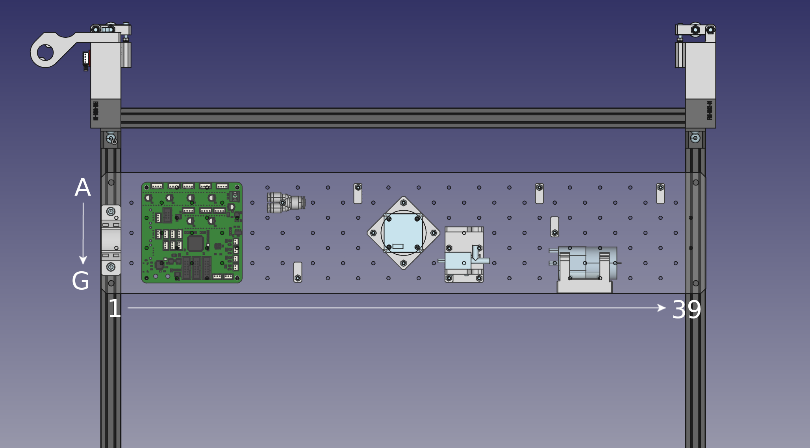
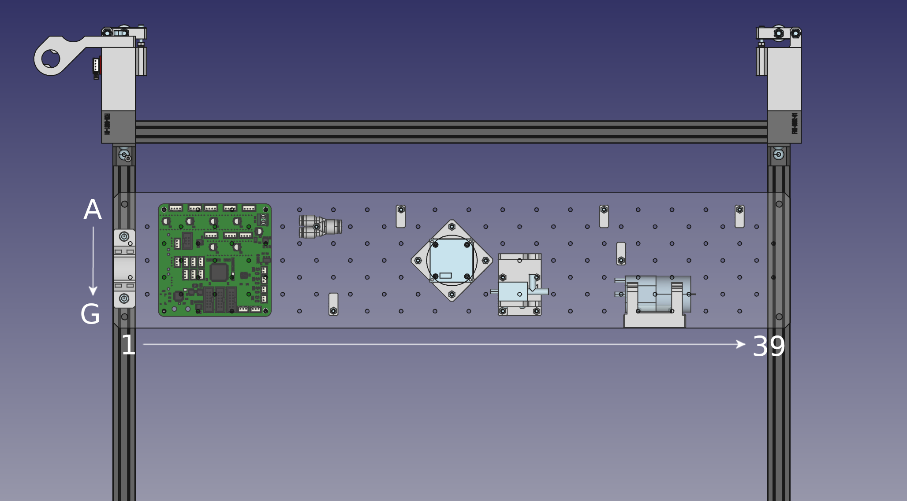

Populating the Staging Plate
We now have the main structure of the machine assembled! Now we'll mount some components to the bottom of the staging plate.
Overview
Refer to the images below for referencing where to mount parts on the staging plate.
 

Soldering Pump
| Qty | Part |
|---|---|
| 1 | Vacuum Pump |
| 1 | Vacuum Pump Wire (Labeled "P1") |
| 2 | Heatshrink (small) |
Some LumenPnP kits shipped with a pump that had its connector pre-soldered to it. If your pump is not pre-soldered, follow along here to prepare your pump.
-
Gather your Pump, the pump wire (labeled "P1"), and two lengths of heatshrink.  }
}
Pump mount
| Qty | Part |
|---|---|
| 1 | FDM-0025 (Pump Mount) |
| 2 | M3 Hex Nuts |
| 2 | Rubber Band |
| 1 | Vacuum Pump |
| 2 | M3x10 machine screw |
The first thing we'll mount to the staging plate is the `Pump Mount" "FDM-0025" >}}. This print suspends the pump using two rubber bands to ensure none of the vibration of the pump is transferred into the frame.
-
Start by press-fitting M3 nuts into the side recesses in the `Pump Mount" "FDM-0025" >}}. 


-
Now stretch each rubber band over each pair of pegs on the
Pump Mount" "FDM-0025" >}}. Guide the pump between each pair of bands so that it's suspended in thePump Mount" "FDM-0025" >}}.


-
Mount the `Pump Mount" "FDM-0025" >}} to the staging plate using two M3 x 10mm screws in the location shown below, G31 and G33.
 }
}
Valve mount
| Qty | Part |
|---|---|
| 1 | FDM-0042 (Valve Mount) |
| 1 | Blowoff Valve |
| 4 | M3 Hex Nut |
| 6 | M3x8 machine screw |
Now we'll attach the `Valve Mount" "FDM-0042" >}} to the staging plate.
-
Press fit four M3 nuts into the recesses in the `Valve Mount" "FDM-0042" >}}.  )
)
Pneumatic Y splitter mount
| Qty | Part |
|---|---|
| 1 | M3x30 machine screw |
| 1 | M3 Hex nut |
| 1 | Y Splitter |
- Use an M3x30mm screw and an M3 nut to mount the pneumatic Y splitter to the staging plate as shown: B12.
 )
)
Bottom camera mount
| Qty | Part |
|---|---|
| 1 | FDM-0019 (Up Light Mount) |
| 1 | FDM-0020 (Up Camera Mount) |
| 1 | Up Ring Light PCB |
| 1 | USB Camera (Bottom) |
| 4 | M3x30 machine screw |
| 4 | M3 Hex Nut |
| 4 | M2.5x8 machine screw |
| 1 | Super Lube |
-
Slide the Up Ring Light into the `Up Light Mount" "FDM-0019" >}}. The cable connector and LEDs should be facing the printed part, away from the camera in this photo.
 }
} -
Stack the
Up Camera Mount" "FDM-0020" >}}Up Light Mount" "FDM-0019" >}}  to get it to turn. With the lens removed, use a cotton swab to apply a very small amount of Super Lube to the lens threads. Be careful not to get any of the lubricant inside or on the lens. Wipe off any excess with a cotton swab or microfiber cloth. If necessary, you can clean the lens itself using a microfiber cloth. Screw the lens back into the camera and work the lubricant into the threads. Save the lubricant as you'll use it again later. Finally, add the set screw back to the side of the lens assembly. Tighten the set screw just enough to keep the lens in place but not so much that it prevents you from adjusting the lens with a little force, as you'll need to adjust the lens after the camera is mounted.
-
Stack the Up Camera in the `Up Camera Mount" "FDM-0020" >}}. The cable connector for the camera should be as close to the cable connector for the Up Ring Light as possible, as pictured below.
 }
} -
Use four M2.5x8mm screws to mount the camera into the `Up Camera Mount" "FDM-0020" >}} by using the inner set of four holes and tapping directly into the plastic. . The cable connector for the Up Ring Light should be facing down and to the left, away from the valve.
 }
} -
Ensure that your bottom camera matches the orientation to the image below.
 }
} -
If you have the fiberglass PCB staging plate, note that this is where the foot will get installed when your LumenPnP is ready.  |
| 3 | M3 Hex Nut |
| 3 | M3x8 machine screw |
-
Slide three M3 nuts into the slots in the back of the `Nozzle Holder" "FDM-0024" >}}. 
 )
)
Next steps
Continue to installing the motherboard.